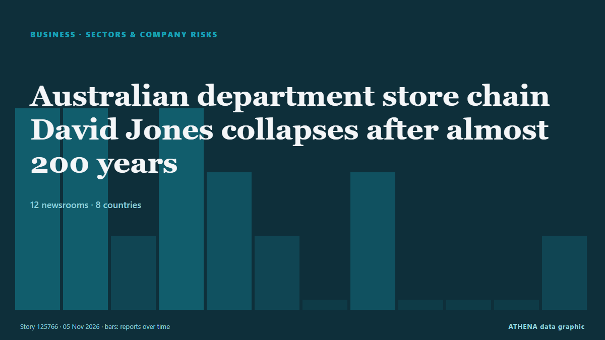

الأعمال والشركات والاستثمار
برعايةبرعاية  Cybernetics and Artificial Intelligence Lab Welcome to the Cybernetics and Artificial Intelligence Laboratory, established at the Department of Business Administration of the National and Kapodistrian University of Athens. The lab is headed by Professor Dimitrios Thomakos. The lab aims to do research that can be published in top venues. Our research uses tools and methods of Artificial Intelligence, and lies in the following areas: - Forecasting - Decision making - Cyber security - Finance We are always looking forward to collaborating with exceptional students!
Cybernetics and Artificial Intelligence Lab Welcome to the Cybernetics and Artificial Intelligence Laboratory, established at the Department of Business Administration of the National and Kapodistrian University of Athens. The lab is headed by Professor Dimitrios Thomakos. The lab aims to do research that can be published in top venues. Our research uses tools and methods of Artificial Intelligence, and lies in the following areas: - Forecasting - Decision making - Cyber security - Finance We are always looking forward to collaborating with exceptional students!
تُعرض العناوين بالإنجليزية كما نُشرت.

القطاعات ومخاطر الشركاتAustralian department store chain David Jones collapses after almost 200 years
The company has also been hamstrung by long-dated agreements with landlords. من The Business Times
| 23 أكتوبر | 67 |
|---|---|
| 24 أكتوبر | 40 |
| 25 أكتوبر | 37 |
| 26 أكتوبر | 95 |
| 27 أكتوبر | 96 |
| 28 أكتوبر | 93 |
| 29 أكتوبر | 105 |
| 30 أكتوبر | 92 |
| 31 أكتوبر | 27 |
| 1 نوفمبر | 33 |
| 2 نوفمبر | 115 |
| 3 نوفمبر | 109 |
| 4 نوفمبر | 103 |
| 5 نوفمبر | 54 |
Nippon Steel raises FY26 profit forecast by 52% on robust US Steel earnings
Parent company Nippon Steel increased its U.S. subsidiary’s full-year profit guidance for the third time this year. من Manufacturing Dive
Schneider to shift eastern rail business to Norfolk Southern from CSX
Schneider National will make Norfolk Southern its primary eastern rail provider as the railroad pursues a merger with Union Pacific. من FreightWaves
Grab to cut driver fees, cap deductions at 32pct in Vietnam
HANOI: Vietnam’s competition commission said on Thursday that ride-hailing firm Grab had agreed to cut some fees charged to passengers and drivers and compensate drivers affected by excessive… من New Straits Times
CVS Health to split pharmacy chain from health insurance
CVS Pharmacy will be separate from CVS Health, housing major insurer Aetna and benefits manager Caremark CVS Health, the largest US healthcare conglomerate valued at $117bn, has announced its plans… من The Guardian
Channel 4 axes Married At First Sight UK after review following misconduct claims
Channel 4 chief executive Priya Dogra also confirmed season six of the show, which was filmed earlier this year, would not be broadcast. من The Irish News (Belfast)
Revolut reaches $115 billion valuation after latest fundraising
Revolut has completed its latest fundraising process, reaching a $115 billion valuation, the fintech company announced on Wednesday, as it continues expanding its banking operations across… من Cyprus Mail
Toyota posts profit surge and lifts annual outlook as hybrid sales shine
Toyota on Thursday booked its first profit gain in six quarters and lifted its annual outlook by 15%, as a weaker yen and robust demand for higher-margin hybrid vehicles offset a slide in sales in… من Tuoi Tre News
BP raises £785m to pay off debt after selling down Aker BP stake
BP has offloaded around a third of its stake in Norwegian oil and gas company Aker BP marking a major cash injection as it seeks to bring down its debt pile. من City A.M.
Sony Q2 profit jumps on 'Spider-Man' and PlayStation boost
Blockbuster “Spider-Man: Brand New Day” delivered a major boost to Sony’s September quarterly earnings on the top and bottom lines. من Variety
Democratic takeover of US Congress: What happens next
Buoyed by victories in traditional Republican strongholds, Democrats pledged swift action on living costs and the Iran war, while prioritising investigations into alleged abuses and corruption. من Free Malaysia Today
#SHOWBIZ: South Korean TV drama production at risk of collapse, warn industry groups
SEOUL: Twelve South Korean industry groups urged the government on Wednesday (Nov 4) to invest in and support the production of Korean television dramas, known as K-dramas, warning that the country’s… من New Straits Times
Google extends voluntary buyout offers
Alphabet’s Google (GOOGL.O), opens new tab has expanded employee buyout offers to several countries this year as it looks to rein in rising costs amid heavy spending on artificial intelligence. من FBC News
The World's Mayors Encounter Dynamic Ningbo
Ningbo, as the host city of the 2026 Global Mayors Dialogue, which opened on Tuesday, is seizing the chance to showcase its connectivity with the world. من CGTN (China)
AD Ports Group appoints Dr Afif Saif Al Yafei as Group Chief Executive Officer
AD Ports Group , a leading global enabler of integrated trade, industry and logistics solutions, announced the appointment of Dr. من Cyprus Shipping News
TotalEnergies to Take Operatorship of Two Major Gas Fields off Malaysia
TotalEnergies has signed agreements to acquire a 30% operated interest in the Lang Lebah and B14 gas fields offshore Malaysia, paving the way for an integrated development… من Offshore Engineer
Arm beats second-quarter revenue estimates on AI and data-center demand
It expects to sell US$2 billion worth of its CPU, the AGI CPU, in fiscal 2027 and 2028. من The Business Times
GXO reports stronger growth as logistics contract wins accelerate
GXO Logistics reported higher revenue and net income for the third quarter of 2026, supported by stronger organic growth and an increase in new business contracts. من Container News
Canva announces layoffs, job changes for about 22% of workforce
The revamp leaves the company in a delicate financial balance. من The Business Times
Culture Secretary formally intervenes in Sky’s £1.6bn ITV deal
Lisa Nandy will bring forward streaming legislation to allow a new public interest consideration covering broadcasting of on-demand programmes. من The Irish News (Belfast)
German auto supplier Schaeffler to cut 3,460 jobs in Europe amid automotive crisis
Restructuring targets net reduction of 2,660 positions in Germany and 800 across rest of Europe by 2028. من Anadolu Agency (English)
Piraeus Port Authority nine-month profit falls 21.5%
Piraeus, Greece (Ports Europe) November 4, 2026 – Piraeus Port Authority (PPA) reported a 21.5% fall in nine-month profit to €59.7 million, but container throughput at Pier I grew in the third… من Ports Europe
Aramco acquires 49% stake in Saudi Arabia's Humain
RIYADH: Saudi Aramco has completed its acquisition of a 49 percent stake in artificial intelligence company Humain, formalising an agreement first announced in October 2025, in a transaction… من Arab News
German automaker giant BMW's operating profit falls to lowest level since 2020
Munich-based automaker's operating profit falls by 35.2% in 1st 9 months of 2026. من Anadolu Agency (English)
Google to pour US$15bil into Malaysia's digital future
KUALA LUMPUR: Google will invest US$15 billion in Malaysia between 2027 and 2028 to develop digital infrastructure, including data centre campuses in industrial zones, and expand clean energy… من New Straits Times
Klobuchar notches win in Minnesota governor's race
Amy Klobuchar will replace outgoing Governor Tim Walz, the 2024 Democratic vice presidential nominee, who ended his bid for a third term after the long-simmering fraud investigation exploded into a… من NDTV
Danantara prepares project pipeline for US talks ahead of G20
Indonesia’s sovereign wealth fund, the Danantara Investment Management Agency, is finalizing a portfolio of ... من Antara (English)
Libya's top religious authority rules against wearing Nike clothes
The US company was named after the Greek goddess of victory, so the Dar al-Ifta said displaying its logo was unIslamic. من BBC News
StormGeo acquires Portchain to accelerate Just-in-Time voyage optimisation at scale
StormGeo’s acquisition of software provider Portchain adds port call coordination to StormGeo’s Voyage Intelligence platform. من Ship.Energy
Von der Leyen: Hormuz closure cost Europe €127 billion
European Commission president's remarks come after the US struck Iran’s Qeshm Island on Monday night. من Euractiv
Apple FYQ4 Revenue Tops Forecasts On iPhone Sales As New CEO John Ternus Steps Up
Apple revenue beat Wall Street forecasts rising 12% for the fiscal fourth quarter ended in September, led by strong iPhone sales. من Deadline
Nexperia sues Wingtech and its founder, demanding compensation for damages
Nexperia has launched legal action against its Chinese parent company, Wingtech Technology, demanding more than $2 billion in compensation, according to Wingtech. من NL Times
Palantir nearly doubles 3Q26 revenue, riding wave of commercial demand
Palantir reported third-quarter 2026 revenue results that nearly doubled from the previous year. من DigiTimes Asia
Hinge is making a surprising change to its subscriptions. Here’s who stands to benefit
Hinge users may soon have access to a more affordable subscription tier. من Fast Company